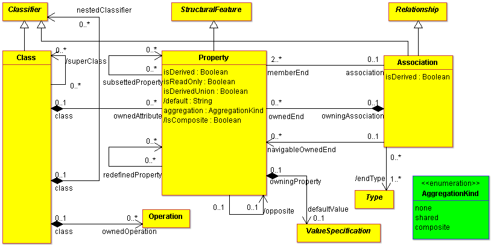
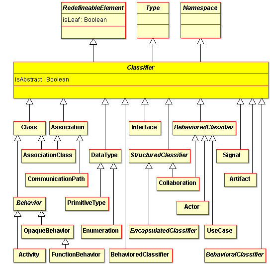
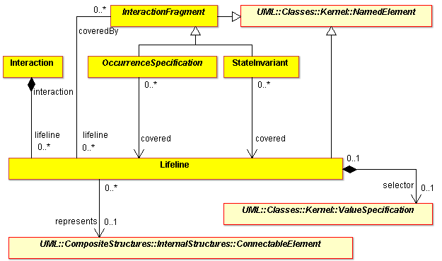
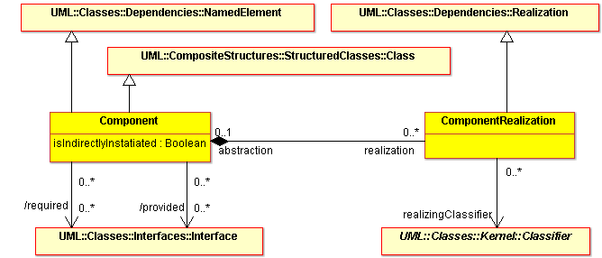
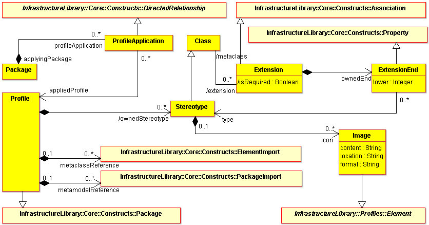

As ArgoUML switches from UML 1.4 to UML 2.x, these changes have to be considered. This section lists some of the most important changed concepts (in alphabetical order) and the impact of their changes.
Please update this page as you make changes to the code which are required by UML 2.x. This will allow us to create a comprehensive list for users as well as making sure that any UML 1.4 to UML 2.x conversion tool covers all the important elements.
Contents
Structure
Association End
In UML 1.4, an association end is a part of an association (composition) and is associated with a classifier. ArgoUML has a property panel for it.
In UML 2.x, there is no association end metaclass. An association end instead is represented by a property (which also represents attributes): 
The issue 6208 covers some of the changes that were made to deal with this.
The no longer supported targetScope of an association end has already been taken care of in issue 5458.
Classifier
In UML 1.4, a classifier is is the metamodel superclass of Class, DataType, and Interface. ArgoUML relies on that in many places by using the model facade method isAClassifier(). These method calls have to be rethought, because in UML 2.x a classifier means much more:

Classifier Role
In UML 2.x interactions are contained within classifiers and not only within collaborations. Their participants are modeled by lifelines instead of classifier roles. For sequence diagrams this means that there are no classifier roles, but "connectable elements" associated with lifelines:

(To be explained: connectable elements. The concepts of classifier role, association role, and association end role have been superseded in UML 2.x.)
Component
The "resides" relationship from UML 1.x relied on namespace aspects to define both namespace aspects as well as "residence" aspects. These two aspects have been separately modeled in UML 2.x. The basic residence relationship in UML 1.x maps to the realizingClassifiers relationship in UML 2.x. The namespace aspects are defined through the basic namespace aspects of classifiers in UML 2.x, and extended in the ?PackagingComponents metamodel for optional namespace relationships to elements other than classifiers.

In UML 2.x, a component is notated by a classifier symbol that no longer has two protruding rectangles. A <<component>> "stereotype-like" notation is used in UML 2.x. Optionally, a component icon that is similar to the UML 1.4 icon can still be used in the upper right-hand corner of the component symbol.
Multiplicity
?MultiplicityElement in UML 2 is abstract, so all create and delete methods for the UML 1.4 Multiplicity elements are deprecated. Instead setMultiplicity should be used. This primarily is an internal implementation detail since the user doesn't deal directly with Multiplicity elements even in the UML 1.4 user interface.
The model has also been simplified so that a multiplicity just has an upper and lower bound. Lists of ?MultiplicityRanges (which allowed multiple ranges or discontinuous values) have been eliminated.
Stereotypes and Tagged Values
Stereotypes and Tagged Values are handled by the Profile mechanism (a lightweight extension mechanism). Stereotypes are specific metaclasses, tagged values are standard metaattributes, and profiles are specific kinds of packages. In UML 1.3, tagged values could extend a model element without requiring the presence of a stereotype. In UML 1.4, this capability, although still supported, was deprecated, to be used only for backward compatibility reasons. In UML 2.0, a tagged value can only be represented as an attribute defined on a stereotype. Therefore, a model element must be extended by a stereotype in order to be extended by tagged values.

Behavior
Transitions
Transitions may have multiple triggers now. In UML there was only one trigger, in UML2 there is a list of triggers. In the notation for a transition the triggers are comma separated.
Local transitions were added. See wikipedia for the excellent drawing (but the text forgoes internal transitions).
Internal transitions still exist, but are now stored in the same way as external transitions. A ?TransitionKind enumeration is added to make the difference.
States
Instead of the different metaclasses ?SimpleState, ?CompositeState, ?SubmachineState, the UML2 has one State and the difference is made by attributes of this State. For the end-user not much will change, but our implementation may be impacted considerably.
The UML1 ?StateVertex is replaced by UML2 Vertex.
The "top" state from UML1 is gone - instead we now have a Region. Instead of the direct hierarchy of ?StateVertexes contained in a Composite state, UML2 has Regions that contain Vertexes and States that contain Regions.